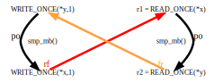
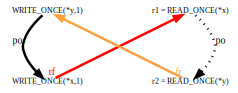
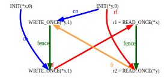
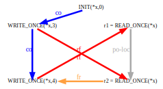

IntroductionIt has been said that Documentation/memory-barriers.txt can be used to frighten small children, and perhaps this is true. But even if it is true, it is woefully inefficient. After all, there is a huge number of children in this world, so a correspondingly huge amount of time and effort would be required in order to read it to them all. This situation clearly calls for automated tooling, which is now available in prototype form. This tool takes short fragments of concurrent C code as input, and exhaustively analyzes the possible results. In other words, instead of perusing memory-barriers.txt to find the answer to a memory-ordering question, you can get your answer by writing a (very!) small test case and feeding it to the tool, at least for test cases within the tool's current capabilities and limitations. This article gives an introduction to the tool, describing how to use it and how it works. This article is organized as follows, with the intended audience for each section in parentheses:
This is followed by the inevitable answers to the quick quizzes. Those wishing to dive directly into the strong model will find it here. Why Formal Memory Models?Even before Linux, kernel hacking has tended to involve more intuition and less formal methods. Formal methods can nevertheless be useful for providing definite answers to difficult questions. For example, how many different behaviors can a computer program exhibit? Particularly one that uses only values in memory, with no user input or output? Computers being the deterministic automata they are, most people would say only one, and for uniprocessor systems they would be basically correct. But multiprocessor systems can give rise to a much wider range of behaviors, owing to subtle variations in the relative timing of the processors and the signals transmitted among them, their caches, and main memory. Memory models try to bring some order to the picture, first and foremost by characterizing exactly which outcomes are possible for a Symmetric Multiprocessor (SMP) system running a certain (small!) program. Even better, a formal memory model enables tools to automatically analyze small programs, as described here and here. However, those tools are specialized to specific CPU families. For analyzing the Linux kernel, what we need is a tool targeted at a higher level, one that will be applicable to every CPU architecture supported by the kernel. Formal memory models require extreme precision, far beyond what the informal discussion in memory-barriers.txt can possibly provide. To bridge this gap in the best way possible, we have formulated the guiding principles listed in the following section. Guiding PrinciplesOur memory model is highly constrained because it must match the kernel's behavior (or intended behavior!). However, there are numerous choices to be made, so we formulated the following principles to guide those choices:
Strength Preferred to WeaknessWhen all else is equal, a stronger memory model is clearly better, but this raises the question of what is meant by “stronger”. For our purposes, one memory model is considered to be stronger than another if it rules out a larger set of behaviors. Thus, the weakest possible memory model is one that would allow a program to behave in any way at all (as exemplified by the “undefined behavior” so common in programming-language standards), whereas the strongest possible memory model is one that says no program can ever do anything. Of course, neither of these extremes is appropriate for the Linux kernel, or for much of anything else. The strongest memory model typically considered is sequential consistency (SC), and the weakest is release consistency process consistency (RCpc). SC prohibits any and all reordering, so that all processes agree on some global order of all processes' accesses, which is theoretically appealing but expensive, so much so that no mainstream microprocessor provides SC by default. In contrast, RCpc is fairly close to the memory models we propose for the Linux kernel, courtesy of the Alpha, ARM, Itanium, MIPS, and PowerPC hardware that the Linux kernel supports. On the other hand, we don't want to go overboard. Although strength is preferred over weakness as a general rule, small increases in strength are not worth order-of-magnitude increases in complexity. Simplicity Preferred to ComplexitySimpler is clearly better; however, simplicity will always be a subjective notion. A formal-methods expert might prefer a model with a more elegant definition, while a kernel hacker might prefer the model that best matched his or her intuition. Nevertheless, simplicity remains a useful decision criterion. For example, assuming all else is equal, a model with a simpler definition that better matched the typical kernel hacker's intuition would clearly be preferred over a complex counterintuitive model. Support Existing Non-Buggy Linux-Kernel CodeThe memory model must support existing non-buggy code in the Linux kernel. However, our model (in its current form) is rather limited in scope. Because it is not intended to be a replacement for either hardware emulators or production compilers, it does not support:
Quick Quiz 1:
But my code contains simple unadorned accesses to shared variables!
So what possible use is this memory model to me?
As always, adding more detail and functionality to the model will slow it down, so the goal is therefore to balance the needs for speed and for functionality. The current model is a starting point, and we hope to incorporate additional functionality over time. We also hope that others will incorporate this memory model into their tools. Be Compatible with Hardware Supported by the Linux KernelThe memory model must be compatible with the hardware that the Linux kernel runs on. Although the memory model can be (and is) looser than a given instance of hardware, it absolutely must not be more strict. In other words, the memory model must in some sense be the least common denominator of all memory models of all CPU families that run the Linux kernel. This requirement is ameliorated, to some extent, by the ability of the compiler and the Linux kernel to mask hardware weaknesses. For example:
Nevertheless, the memory model must be sufficiently weak that it does not rule out behaviors exhibited by any of the CPU architectures the Linux kernel has been ported to. Different CPU families can have quite divergent properties, so that each of Alpha, ARM, Itanium, MIPS, and PowerPC required special attention at some point or another. In addition, hardware memory models are subject to change over time, as are the use cases within the Linux kernel. The Linux-kernel memory model must therefore evolve over time to accommodate these changes, which means that the version presented in this paper should be considered to be an initial draft rather than as being set in stone. It seems likely that this memory model will have the same rate of change as does Documentation/memory-barriers.txt. Providing compatibility with all the SMP systems supporting Linux is one of the biggest memory-model challenges, especially given that some systems' memory models have not yet been fully defined and documented. In each case, we have had to take our best guess based on:
Thankfully, this situation has been improving. For example, although formal memory models have been available for quite some time (such as here [PDF]), tools that apply memory models to litmus tests have only appeared much more recently. We most certainly hope that this trend towards more accessible and better-defined memory models continues, but in the meantime we will continue to work with whatever is available. Support Future Hardware, Within ReasonThe memory model should support future hardware, within reason. Linux-kernel ports to new hardware must supply their own code for the various memory barriers, and might one day also need to supply their own code for similar common-code primitives. But since common code is valuable, an architecture wishing to supply its own code for (say) READ_ONCE() will need a very good reason for doing so. This proposal assumes that future hardware will not deviate too far from current practice. For example, if you are porting Linux to a quantum supercomputer, the memory model is likely to be the least of your worries. Be Compatible with the C11 Memory Model, Where Prudent and ReasonableWhere prudent and reasonable, the model should be compatible with the existing C and C++ memory models. However, there are a couple areas where it is necessary to depart from these memory models:
On the positive side, the Linux kernel has recently been adding functionality that is closer to that of C and C++ atomics, with the ongoing move from ACCESS_ONCE() to READ_ONCE() and WRITE_ONCE() being one example and the addition of smp_load_acquire() and smp_store_release() being another. Expose Questions and Areas of UncertaintyDefining a memory model inevitably uncovers interesting questions and areas of uncertainty. For example:
In a perfect world, we would resolve each and every area of uncertainty, then produce a single model reflecting full knowledge of all the hardware that the Linux kernel supports. However, astute readers might have noticed that the world is imperfect. Furthermore, rock-solid certainties can suddenly be cast into doubt, either with the addition of an important new architecture or with the uncovering of a misunderstanding or an error in documentation of some existing architecture. It will therefore be sometimes necessary for the Linux kernel memory model to say “maybe”. Unfortunately, existing software tools are unable to say “maybe” in response to a litmus test. We therefore constructed not one but two formal models, one strong and the other less strong. These two models will disagree in “maybe” cases. Kernel hackers should feel comfortable relying on ordering only in cases where both models agree that ordering should be provided, and hardware architects should feel the need to provide strong ordering unless both models agree that strong ordering need not be provided. (Currently these models are still very much under development, so it is still unwise to trust either model too much.) Causality and OrderingCausality is an important property of memory models, in part because causality looms large in most peoples' intuitive understanding of concurrent code. However, causality is a very generic term, lacking the precision required for a formal memory model. In this article we will therefore use the terms “causality” and “causal relationship” quite sparingly, instead defining precise terms that will be used directly within the memory model. But a brief discussion now will help illuminate the topic and will introduce some important relationships between causality, ordering, and memory models. Causality is simply the principle that a cause happens before its effect, not after. It is therefore a statement about ordering of events in time. Let's start with the simplest and most direct example. If CPU A writes a value to a shared variable in memory, and CPU B reads that value back from the shared variable, then A's write must execute before B's read. This truly is an example of a cause-and-effect relation; the only way B can possibly know the value stored by A is to receive some sort of message sent directly or indirectly by A (for example, a cache-coherence protocol message). Messages take time to propagate from one CPU or cache to another, and they cannot be received before they have been sent. (In theory, B could guess the value of A's write, act on that guess, check the guess once the write message arrived, and if the guess was wrong, cancel any actions that were inconsistent with the actual value written. Nevertheless, B could not be entirely certain that its guess is correct until the message arrives—and our memory models assume that CPUs do not engage in this sort of guessing.) On the other hand, if B does not read the value stored by A but rather an earlier value, then there need not be any particular temporal relation between A's write and B's read. B's read could have executed either before or after A's write, as long as it executed before the write message reached B. In fact, on some architectures, the read could return the old value even if it executed a short time after the message's arrival! A fortiori, there would be no cause-and-effect relation. Another example of ordering also involves the propagation of writes from one CPU to another. If CPU A writes to two shared variables, these writes need not propagate to CPU B in the same order as the writes were executed. In some architectures it is entirely possible for B to receive the messages conveying the new values in the opposite order. In fact, it is even possible for the writes to propagate to CPU B in one order and to CPU C in the other order. The only portable way for the programmer to enforce write propagation in the order given by the program is to use appropriate memory barriers or barrier-like constructs, such as smp_mb(), smp_store_release(), or C11 non-relaxed atomic operations. A third example of ordering involves events occurring entirely within a single CPU. Modern CPUs can and do reorder instructions, executing them in an order different from the order they occur in the instruction stream. There are architectural limits to this sort of thing, of course. Perhaps the most pertinent for memory models is the general principle that a CPU cannot execute an instruction before it knows what that instruction is supposed to do. For example, consider the statement “x = y;”. To carry out this statement, a CPU must first load the value of y from memory and then store that value to x. It cannot execute the store before the load; if it tried then it would not know what value to store. This is an example of a data dependency. There are also address dependencies (for example, “a[n] = 3;” where the value of n must be loaded before the CPU can know where to store the value 3). Finally, there are control dependencies (for example, “if (i == 0) y = 5;” where the value of i must be loaded before the CPU can know whether to store anything into y). In the general case where no dependency is present, however, the only portable way for the programmer to force instructions to be executed in the order given by the program is to use appropriate memory barriers or barrier-like constructs. Finally, at a higher level of abstraction, source code statements can be reordered or even eliminated entirely by an optimizing compiler. We won't discuss this very much here; memory-barriers.txt contains a number of examples demonstrating the sort of shenanigans a compiler can get up to when translating a program from source code to object code. Memory Models and The Role of CyclesOne way of formalizing a memory model is to create an abstract description of how a running system operates internally, and then enumerate all the possible outcomes this abstract operation can give rise to. There are tools that take this operational approach. Another way is to define the constraints imposed by the memory model, in the form of logical axioms, and then enumerate all the possible outcomes that are consistent with these constraints. A tool using this axiomatic approach is described here. This herd tool can be downloaded here, and built as described in the INSTALL.txt file. Both approaches take as input a small fragment of code and an assertion (together called a litmus test) and produce an output value indicating whether the memory model permits the code fragment to execute in a way that would make the assertion true. Here is a simple example of a litmus test (with line numbers added) that illustrates the so-called “message-passing” pattern:
Litmus Test #1
Line 1 identifies the source language of the code fragment (“C”) and gives the litmus test's name (“C-MP+o-mb-o+o-mb-o”). Lines 3 and 4 are where initial values could be provided. In this program no explicit initialization is needed, because all variables' initial values default to zero. Lines 6-21 provide the code, in this case, one function for each of two processors. You can choose any name you like for these functions as long as it consists of a ‘P’ immediately followed by the processor's number, numbered consecutively starting from zero. By convention, local variable names begin with ‘r’ (these variables are treated as though they are stored in CPU registers), and global variables must be passed in by reference as function parameters. The names of these function parameters are significant: They must match the names of the corresponding global variables. Finally, lines 23 and 24 provide an “exists” assertion expression to evaluate the final state. This final state is evaluated after the dust has settled: Both processes have completed and all of their memory references and memory barriers have propagated to all parts of the system. The references to the local variables “r1” and “r2” in line 24 must be prefixed with “1:” to specify which processor they are local to. Note that a single “=” in this expression is an equality operator rather than an assignment (the assertion expression is written in the litmus-test language rather than in C). The “/\” character combination means “and”; it is an ASCII representation of the mathematical ‘∧’ symbol. Similarly, “\/” stands for “or” (the mathematical ‘∨’ symbol); this assertion could have been expressed just as well in negated form by writing: 23 forall 24 (1:r1=0 \/ 1:r2=1) The “~” character indicates negation, so this assertion could also have been written in non-negated form as follows: 23 exists 24 ~(1:r1=0 \/ 1:r2=1) The software tools mentioned above simply tell you whether the logic expression evaluates to true in all, some, or none of the possible executions of the code. Value judgments are left to the user. Again, the herd tool can be downloaded here, and built as described in the INSTALL.txt file. It may then be run using the linux.def macro file included in the source package, the Litmus Test #1 source file, and the “bell” and “cat” files for the strong kernel memory model described here. The command is as follows: For people who prefer shorter command lines, the strong.cfg configuration file specifies these settings already, along with several others related to the style of the plot files herd is capable of producing. The command is:herd7 -macros linux.def -bell strong-kernel.bell -cat strong-kernel.cat C-MP+o-mb-o+o-mb-o.litmus The output from either command is:herd7 -conf strong.cfg C-MP+o-mb-o+o-mb-o.litmus Outcome for Litmus Test #1 (strong model)1 Test C-MP+o-mb-o+o-mb-o Allowed 2 States 3 3 1:r1=0; 1:r2=0; 4 1:r1=0; 1:r2=1; 5 1:r1=1; 1:r2=1; 6 No 7 Witnesses 8 Positive: 0 Negative: 3 9 Condition exists (1:r1=1 /\ 1:r2=0) 10 Observation C-MP+o-mb-o+o-mb-o Never 0 3 11 Hash=3240a31645e46554cb09739d726087ad This output indicates the three possible outcomes from running this code in the Linux kernel:
The outcome r1 == 1 && r2 == 0 is not possible, as indicated by the “Never 0 3” near the end of the output. This forbidden outcome would require a cycle of events, each happening before the next and the last happening before the first:
 The labels in the diagram are defined as follows:
The fr relation can be somewhat counter-intuitive, so please look here for additional explanation. The herd tool provides many additional relations, which are tabulated here. It is important to note that not all cycles are prohibited. To see this, consider the following:
Litmus Test #2
This is exactly the same as the previous litmus test except that the smp_mb() calls have been removed. Despite the fact that the outcome r1 == 1 && r2 == 0 exhibits the same cycle as above, it can in fact occur on weakly ordered systems where, for example, P0's writes and P1's reads can be reordered by the hardware. On such systems, the smp_mb() statements are necessary to ensure that the order of execution of the writes and reads is the same as their order in the source code. This can be confirmed by running the tool in the same way as before, but on the new litmus test: herd7 -conf strong.cfg C-MP+o-o+o-o.litmus The output will be as follows: Outcome for Litmus Test #2 (strong model)1 Test C-MP+o-o+o-o Allowed 2 States 4 3 1:r1=0; 1:r2=0; 4 1:r1=0; 1:r2=1; 5 1:r1=1; 1:r2=0; 6 1:r1=1; 1:r2=1; 7 Ok 8 Witnesses 9 Positive: 1 Negative: 3 10 Condition exists (1:r1=1 /\ 1:r2=0) 11 Observation C-MP+o-o+o-o Sometimes 1 3 12 Hash=c3bdaae6256fa364ad31fb3c1e07c0f5 Note that all four possible states are present, and note also the “Sometimes 1 3” near the end of the output. Quick Quiz 2:
Can't the compiler also reorder these accesses?
On sufficiently weakly ordered systems, the cyclic outcome in Litmus Test #2 could occur even without instruction reordering, because the writes might not propagate from P0 to P1 in the order they were executed. And even on more strongly ordered systems, it would be sufficient to reorder either the reads or the writes; it is not necessary to reorder both. For example, if P1's accesses were reordered then we could have the following sequence of events:
 This illustrates an important point: Cycles in time of instruction execution are impossible, because time is linearly ordered (in our universe, even if not in all solutions to Einstein's field equations). Part of a memory model's job is to provide the conditions under which one instruction must execute before another and to check for any resulting cycles. On the other hand, if there is no such cycle then it is possible to find an order of execution for all the instructions which is compatible with the memory model's ordering requirements (for example, by doing a topological sort). If this potential execution order did not violate any of the memory model's other requirements, it would demonstrate that the litmus test's assertion could hold. Okay, we admit the preceding paragraph is an oversimplification. Modern CPUs do not execute instructions at precise moments in time; instead they run instructions through complicated multi-stage pipelines and engage in multiple issue (running more than one instruction through the same pipeline stages in parallel). Furthermore, other ordering requirements come into play along with time of execution, such as cache coherence (see below). Nevertheless, the basic idea is valid. It is worth pointing out that computer hardware almost always has additional restrictions beyond what the memory models describe; CPU designers generally do not implement all of the behaviors allowed by the instruction set architecture. The fact that a memory model says a particular litmus test's assertion might hold does not mean it can actually happen on any given computer. As a simple example, the finite write buffers found in real hardware prevent that hardware from actually doing all the reorderings of writes that memory models typically allow. It also goes the other way—sometimes CPU designers mistakenly implement a behavior that is prohibited by the instruction set architecture (otherwise known as a “silicon bug” or “CPU erratum”). Specifying a Memory Model in Terms of Prohibited CyclesAs we have just seen, there is a close relationship between orderings and the existence of cycles: If some events are constrained to be ordered in a certain way then that ordering cannot contain a cycle. Conversely, if a given relation among various events does not contain any cycles then it is possible to order those events consistently with the relation. Thus, if we can precisely specify which instructions must execute before others in a given piece of Linux kernel code, we will be well on our way to constructing a formal model that defines the kernel's execution-ordering guarantees in terms of cycles among instructions. Even better, this model can then be used to construct a tool that analyzes litmus tests for execution-ordering problems. (And of course, the same technique can be used for describing a memory model's other ordering requirements.) The herd tool implements a language, called cat, designed to represent memory models, which it does by specifying what cycles are prohibited. This specification is defined in terms of sets and relations involving memory-access events, barriers, and threads. (For our purposes, each processor in a litmus test corresponds to a distinct thread.) herd is discussed in more detail here; in this section we will see how to write some simple memory models in the cat language. But first, what cycles should the Linux kernel memory model prohibit? Here is a partial list:
There are quite a few additional nuances of Linux-kernel use cases and peculiarities of specific hardware, but this list provides a good starting point. The following sections present trivial “toy” memory models that prohibit the first two types of cycles. Relaxed Memory Order: Toy SpecificationThe following shows a simple herd program that represents a fragment of the Linux kernel memory model involving simple memory accesses (READ_ONCE() and WRITE_ONCE()) and strong memory barriers (smp_mb()): toy-RMO.cat1 "Toy RMO" 2 3 include "cos.cat" 4 5 let rfe = rf & ext 6 let fence = fencerel(F) 7 8 let rmo-order = fence | rfe | co | fr 9 acyclic rmo-order Line 1 provides a name for the model, and line 3 pulls in some definitions that can be thought of as the herd equivalent to the C-language: #include <stdio.h> However, instead of defining I/O primitives, “cos.cat” defines some basic relations, including the fr relation mentioned earlier. For the litmus tests above (assuming the cyclic execution), the built-in rf (“reads-from”) relation contains the following links:
Line 5 computes rfe (“reads-from external”), which is a restricted version of the rf relation that covers only write-read pairs where the write and the read are executed by different threads. It does this by intersecting (the & operator) the rf relation with the predefined ext relation, which links all pairs of instructions belonging to different threads. For the two litmus tests above, the rfe relation turns out to be exactly the same as the rf relation. Line 6 uses the standard fencerel() function and F event set to define a relation that links any two instructions separated by a memory barrier. For Litmus Test #2, which contains no instances of smp_mb(), this relation is empty. For Litmus Test #1, it contains the following links:
Line 8 defines the rmo-order relation as the union (the | operator) of the fence, rfe, co, and fr relations. rmo-order includes all pairs of instructions for which this toy model of relaxed memory order (RMO) requires the first to execute before the second. Line 9 expresses this requirement by stating that the rmo-order relation is acyclic (contains no cycles). For Litmus Test #2, rmo-order does not contain a cycle, as shown below:
On the other hand, for Litmus Test #1, the additional links added by the fence relation do create a cycle:  Thus this model correctly distinguishes the “message-passing” examples with and without memory barriers, as can be seen by downloading toy-RMO.cat and passing it via the -cat command-line argument for Litmus Test #2 as follows: herd7 -conf strong.cfg -cat toy-RMO.cat C-MP+o-o+o-o.litmus This produces the following output: Outcome for Litmus Test #2 (toy-RMO model)Given the lack of a cycle in the rmo-order relationship, the counter-intuitive cyclic execution is permitted, as indicated by “Sometimes 1 3” in the output. In contrast, for Litmus Test #1, with memory barriers, the command line:1 Test C-MP+o-o+o-o Allowed 2 States 4 3 1:r1=0; 1:r2=0; 4 1:r1=0; 1:r2=1; 5 1:r1=1; 1:r2=0; 6 1:r1=1; 1:r2=1; 7 Ok 8 Witnesses 9 Positive: 1 Negative: 3 10 Condition exists (1:r1=1 /\ 1:r2=0) 11 Observation C-MP+o-o+o-o Sometimes 1 3 12 Hash=c3bdaae6256fa364ad31fb3c1e07c0f5 produces the following output:herd7 -conf strong.cfg -cat toy-RMO.cat C-MP+o-mb-o+o-mb-o.litmus Outcome for Litmus Test #1 (toy-RMO model)As expected, the memory barriers exclude the counter-intuitive outcome where r1 == 1 && r2 == 0.1 Test C-MP+o-mb-o+o-mb-o Allowed 2 States 3 3 1:r1=0; 1:r2=0; 4 1:r1=0; 1:r2=1; 5 1:r1=1; 1:r2=1; 6 No 7 Witnesses 8 Positive: 0 Negative: 3 9 Condition exists (1:r1=1 /\ 1:r2=0) 10 Observation C-MP+o-mb-o+o-mb-o Never 0 3 11 Hash=3240a31645e46554cb09739d726087ad Relaxed Memory Order: Coherence IncludedConsider this ridiculous single-thread litmus test:
Litmus Test #3
On the face of it, this test can never succeed. If we set x to 3 and then overwrite it with the value 4, how can x possibly end up containing 3? Nevertheless, running the Toy RMO model shows that this outcome is permitted: Outcome for Litmus Test #3 (toy-RMO model)1 Test C-CO+o-o Allowed 2 States 2 3 x=3; 4 x=4; 5 Ok 6 Witnesses 7 Positive: 1 Negative: 1 8 Condition exists (x=3) 9 Observation C-CO+o-o Sometimes 1 1 10 Hash=b9e4f0d747854e10ad7310b4381f3652 This is because the model does not forbid it, and everything that is not explicitly forbidden is permitted. The model does not account for cache coherence, a feature supported by most modern microprocessors—and demanded by the vast majority of sane kernel hackers. That's one reason why this model should be considered to be a toy. Cache coherence (sometimes referred to as “per-location sequential consistency”) requires that the writes to any one location in memory occur in a single total order (the coherence order), which all the processors must agree on. It also says that within each thread, the coherence order must be consistent with the program order, as described by the following four coherence rules:
In Litmus Test #3 above, there are three writes to the location where x is stored: the initializing write of 0 (implicit in lines 3-4), and the writes of 3 and 4 (lines 8-9). The initializing write always comes first in the coherence order, and the value tested in the “exists” clause is always the value stored by the write that comes last in the coherence order (called the final write). Thus for the test to succeed, the coherence order for x would have to be: x=0, x=4, x=3. But this would violate the write-write coherence rule, because the write that sets x to 3 comes before (in program order) the write that sets it to 4. (Note: The C11 standard recognizes the notion of sequenced-before rather than that of program order. For the most part the two are the same, referring to the order in which loads and stores occur in the source code, but there are a few differences. For example, the compiler is not required to evaluate the arguments to a function call in any particular order. Thus, even though the statement
will always print out “3 4”, after it executes x
may be equal either to 3 or 4.
We will not worry such subtleties for now.
But we will point out that in
Litmus Test #3,
the
“*x = 3” write
is sequenced before the “*x = 4” write,
and the compiler is not permitted to reorder them.
That is why we have omitted the WRITE_ONCE() calls and
reverted to plain ordinary assignment.
It's okay in this case, because x isn't shared between
processors and we're only trying to make a simple point.
But note that even with this two-line test program,
the compiler is permitted to eliminate the
“*x = 3” write entirely.)
Our Toy RMO memory model can be strengthened to take cache coherence into account. Here is the result: coherent-RMO.cat1 "Coherent RMO" 2 3 include "cos.cat" 4 5 let rfe = rf & ext 6 let fence = fencerel(F) 7 8 let rmo-order = fence | rfe | co | fr 9 acyclic rmo-order 10 11 let com = rf | co | fr 12 let coherence-order = po-loc | com 13 acyclic coherence-order Aside from the name change on line 1, the only difference is the addition of lines 10-13. Line 11 defines the com relation as the union of the rf, co, and fr relations. If you imagine inserting reads into the coherence order for a variable, by placing each read between the write that it reads from and the following write, you'll see that in each case com links a memory access to one that comes later in the coherence order. (com's name arises from the fact that it describes the ways different processors can communicate by writing to and reading from shared variables in memory.) Quick Quiz 3:
The rf, co, and fr terms
in the definition of com describe write-read,
write-write, and read-write links respectively,
corresponding to three of the four
coherence rules.
Why is there no term corresponding to the read-read rule?
po-loc in line 12 is another standard relation; it is the intersection of po and loc, where the loc relation links all pairs of memory accesses that refer to the same location in memory. Thus, po-loc links each memory access to all those that occur after it in program order and access the same variable. Lines 12-13 go on to define coherence-order as the union of po-loc and com and to require that coherence-order not have any cycles. Since Litmus Test #3 contains no reads, its rf and fr relations are empty and therefore com ends up being the same as co. In the non-intuitive execution accepted by the Toy RMO model (where x=3 comes last in the coherence order), com contains the following links:
Outcome for Litmus Test #3 (coherent-RMO model)1 Test C-CO+o-o Allowed 2 States 1 3 x=4; 4 No 5 Witnesses 6 Positive: 0 Negative: 1 7 Condition exists (x=3) 8 Observation C-CO+o-o Never 0 1 9 Hash=b9e4f0d747854e10ad7310b4381f3652 Here's a slightly more sophisticated test that probes the read-read coherence rule:
Litmus Test #4
Because of the write-write coherence rule, we know that the coherence order for x must be: x=0, x=3, x=4. If r1 and r2 were to end up equal to 4 and 3 respectively, it would mean the later read (in program order) had read from the earlier write (in x's coherence order), thereby violating read-read coherence. To see why the Coherent RMO model forbids this result, consider how the various relations would turn out. Because x=4 must come last in the coherence order for x, the co relation contains these links:
Putting these together shows that coherence-order contains the following length-3 cycle:
 As can be seen in the following herd output, this cycle is prohibited: Outcome for Litmus Test #4 (strong model)1 Test C-CO+o-o+o-o Allowed 2 States 6 3 1:r1=0; 1:r2=0; 4 1:r1=0; 1:r2=3; 5 1:r1=0; 1:r2=4; 6 1:r1=3; 1:r2=3; 7 1:r1=3; 1:r2=4; 8 1:r1=4; 1:r2=4; 9 No 10 Witnesses 11 Positive: 0 Negative: 6 12 Condition exists (1:r1=4 /\ 1:r2=3) 13 Observation C-CO+o-o+o-o Never 0 6 14 Hash=e28b27408fda33a59c7f2cd8a5ff7615 Quick Quiz 4:
But don't Itanium and SPARC RMO allow read-read reordering of
acccesses to a single variable by a single CPU?
How does the model handle these CPUs?
Quick Quiz 5:
Whatever happened to memory-barrier pairing???
Exercise: Assuming only that the co relation gives a total ordering of all writes to a particular memory location, prove that any cache-coherent execution of any program (i.e., an execution that obeys the four coherence rules) results in a coherence-order relation without cycles. And conversely, prove that if an execution does violate any of the coherence rules then its coherence-order relation does contain a cycle. This background will help you to understand the strong memory model itself, which can be found here. ConclusionsWe have presented a Linux-kernel memory model that we hope will be useful for education, concurrent design, and for inclusion in other tooling. As far as we know, this is the first realistic formal memory model that includes RCU ordering properties. In addition, we believe this to be the first realistic formal memory model of the Linux kernel. This model is not set in stone, but subject to change with the evolution of hardware and of Linux-kernel use cases. We expect the change rate to be rougly similar to the historical change rate of Documentation/memory-barriers.txt, however, we believe that the guiding principles underlying this memory model will be more durable. The strong model accepts significant complexity to attain greater strength. In contrast, the weak models accept some weakenings in order to achieve some degree of simplicity. Candidate weakenings include:
Although we expect that this memory model will prove quite valuable, it does have a few limitations in addition to those called out earlier here and here:
On the other hand, one advantage of formal memory models is that tools based on them can detect any problem that might occur, even if the probability of occurrance is vanishingly small, in fact, even if current hardware is incapable of making that problem happen. Use of tools based on this memory model is therfore an excellent way to future-proof your code. AcknowledgmentsWe owe thanks to H. Peter Anvin, Will Deacon, Andy Glew, Derek Williams, Leonid Yegoshin, and Peter Zijlstra for their patient explanations of their respective systems' memory models. We are indebted to Peter Sewell, Sumit Sarkar, and their groups for their seminal work formalizing many of these same memory models. We all owe thanks to Dmitry Vyukov, Boqun Feng, and Peter Zijlstra for their help making this human-readable. We are also grateful to Michelle Rankin and Jim Wasko for their support of this effort. This work represents the views of the authors and does not necessarily represent the views of University College London, INRIA Paris, Scuola Superiore Sant'Anna, Harvard University, or IBM Corporation. Linux is a registered trademark of Linus Torvalds. Other company, product, and service names may be trademarks or service marks of others. Answers to Quick QuizzesQuick Quiz 1: But my code contains simple unadorned accesses to shared variables! So what possible use is this memory model to me? Answer: You are of course free to use simple unadorned accesses to shared variables in your code, but you are then required to make sure that the compiler isn't going to trip you up—as has always been the case. Once you have made sure that the compiler won't trip you up, simply translate those accesses to use READ_ONCE() and WRITE_ONCE() when using the model. Quick Quiz 2: Can't the compiler also reorder these accesses? Answer: Given the current Linux-kernel definitions of READ_ONCE() and WRITE_ONCE(), no. These two macros map to volatile accesses, which the compiler is not allowed to reorder with respect to each other. However, if these macros instead mapped to non-volatile C11 memory_order_relaxed loads and stores, then the compiler would be permitted to reorder them. And, as a general rule, compilers are much more aggressive about reordering accesses than even the most weakly ordered hardware. In both cases, those who don't like such code rearrangement call it “weak ordering” while those who do call it “optimization”. Quick Quiz 3: The rf, co, and fr terms in the definition of com describe write-read, write-write, and read-write links respectively, corresponding to three of the four coherence rules. Why is there no term corresponding to the read-read rule? Answer: It's not needed. As we will see in the discussion of Litmus Test #4, a violation of the read-read coherence rule involves a write being “interposed” between two reads in the coherence order. It therefore can be described as a length-3 cycle in coherence-order, involving an fr link followed by an rf link followed by a po-loc link. Quick Quiz 4: But don't Itanium and SPARC RMO allow read-read reordering of acccesses to a single variable by a single CPU? How does the model handle these CPUs? Answer: In the case of Itanium, gcc compiles volatile reads (as in READ_ONCE()) as ld,acq, which enforces read-read ordering. And the Linux kernel runs SPARC in TSO mode, which prohibits read-read reorderings in general, including to a single variable. Quick Quiz 5: Whatever happened to memory-barrier pairing??? Answer: Memory-barrier pairing can be thought of as a special case of cycles, but it was designed for a simpler time when people used much less aggressive lockless designs. Here is an example that breaks memory-barrier pairing:
Litmus Test #5
Because the smp_wmb() orders writes and because the smp_mb() orders everything, straightforward application of memory-barrier pairing would lead you to believe that this cycle would be forbidden. This belief would be incorrect, as can be seen from running the litmus test against the strong model: Outcome for Litmus Test #5 (strong model)1 Test C-R+o-wmb-o+o+mb+o Allowed 2 States 4 3 1:r1=0; b=1; 4 1:r1=0; b=2; 5 1:r1=1; b=1; 6 1:r1=1; b=2; 7 Ok 8 Witnesses 9 Positive: 1 Negative: 3 10 Condition exists (b=2 /\ 1:r1=0) 11 Observation C-R+o-wmb-o+o+mb+o Sometimes 1 3 12 Hash=0a4dd1e17f6132a7145a13b711ccd167 The problem is that the co relationship between P0()'s and P1()'s stores does not imply any sort of causal or temporal relationship between the two stores. Real hardware can and does chose the store ordering after the fact, and so real hardware can and does allow the cycle. In short, memory-barrier pairing was useful in its day, but its day is rapidly drawing to a close. More sophisticated use of lockless algorithms requires more sophisticated mental models of memory barriers.
|